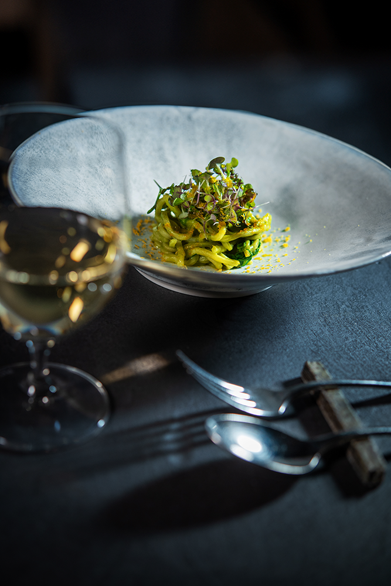
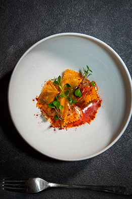
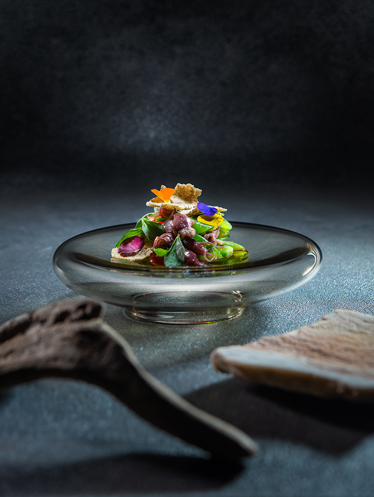
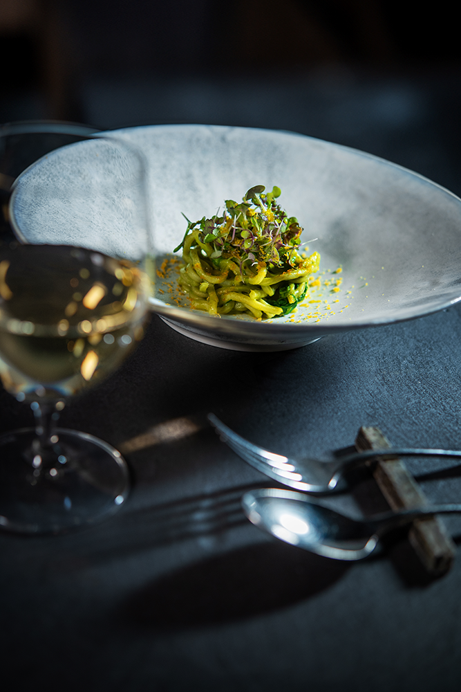
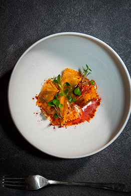
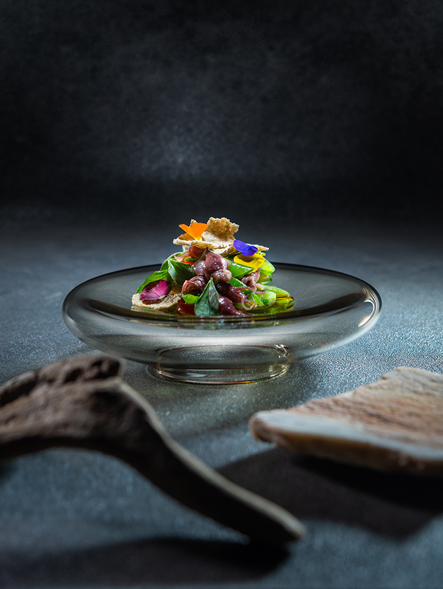

この一枚を撮影するにあたり、私たちが最も大切にしたのは、被写体そのものが持つ「静かな物語」を捉えることでした。ただ形や色を写すのではなく、その質感、歴史、そして作り手の想いが息づく空気感までをも写真に封じ込めたい。そのために、私たちは自然光が最も美しく回り込む時間帯を選び、余計な光を一切排除しました。
ライティングは、被写体の輪郭を優しく縁取る一つのキーライトのみ。それにより生じる深い影が、逆に主題の存在感を際立たせ、見る者の想像力をかき立てます。アングルは、まるで私たちが普段の生活の中でふと目に留めたかのような、自然でありながらも計算された視点を探求しました。この写真を見る人が、一瞬でもその場の静けさや温度を感じ取り、その商品の向こう側にあるストーリーに思いを馳せてもらえたなら、これ以上の喜びはありません。